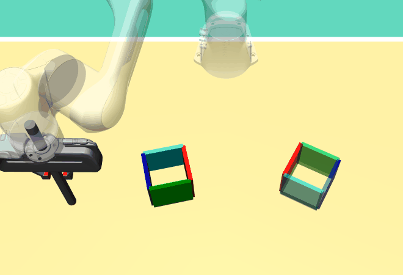
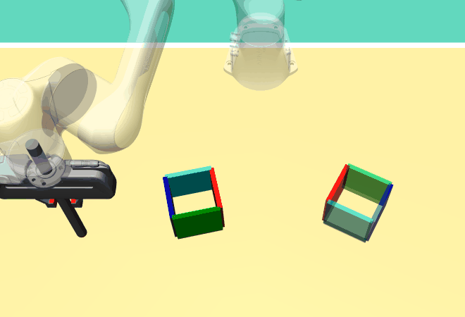
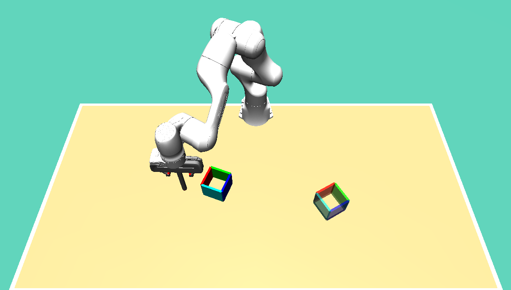
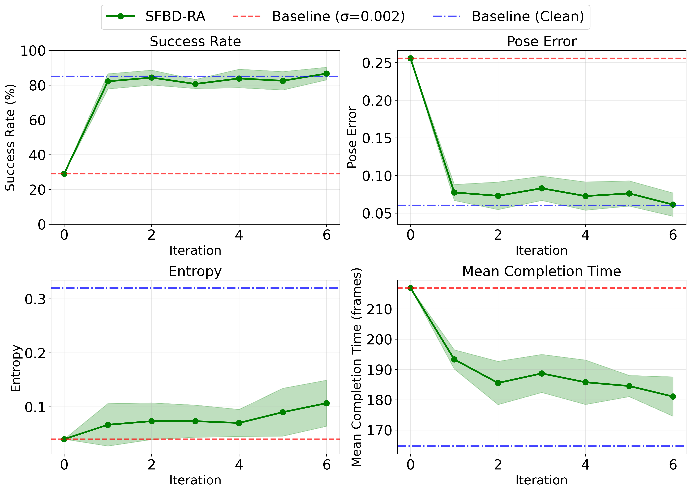
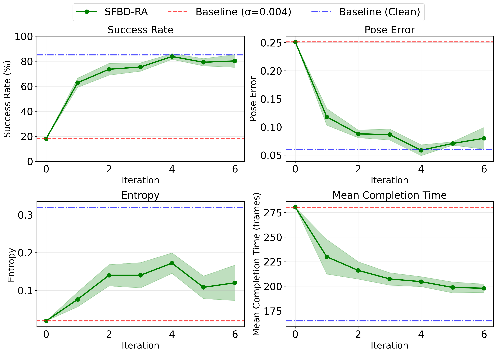
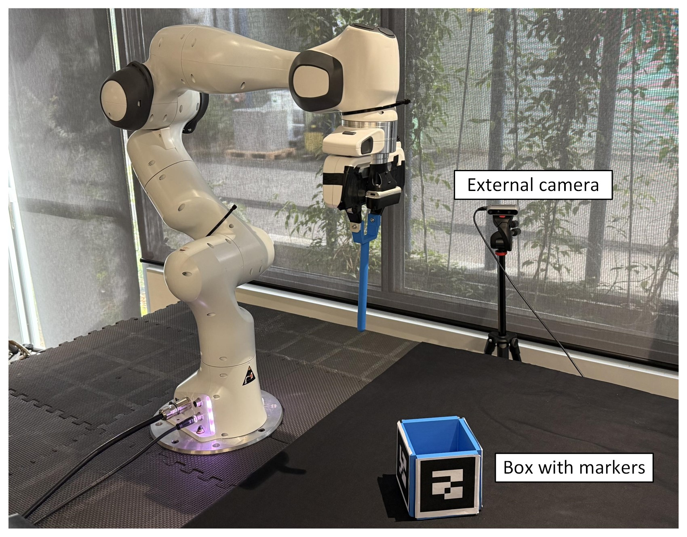

Stochastic Forward‑Backward Deconvolution for Robotics (SFBD-RA)
Anonymous authors · Manuscript under review
Abstract
Diffusion policy is a state-of-the-art approach for robot action generation conditioned on observations. However, to train the policy, existing methods typically assume access to clean expert demonstrations, which limits their applicability when clean expert data are scarce. To overcome this limitation, we adapt a deconvolution-based method from the image generation domain to robotic policy learning. The resulting framework achieves performance comparable to a model trained on an entirely clean dataset, while requiring as little as 2% of the demonstrations to be clean. We further demonstrate that clean demonstrations from related tasks can be leveraged through transfer learning to improve performance on the target task. The proposed approach is validated in both simulations and real-world experiments, where it achieves success rates and completion time comparable to the clean expert data baseline.
Noisy data onlyTrained directly on noisy demonstrations.

SFBD-RA (ours)Noisy demonstrations + 2% clean.

Clean data (reference)Trained on fully clean demonstrations.
1. How SFBD-RA works
SFBD-RA adapts stochastic forward-backward deconvolution from image generation to robot actions. The denoising target changes from pixels to actions, conditioned on the observation; the rest of the pipeline stays the same.
Pretrain on a small clean set
Train the denoiser on 2–10% clean demonstrations, so it starts close to the true action distribution instead of from random weights.
Backward sampling
Use the current denoiser to denoise the actions in the noisy demonstrations, given their observations.
Denoiser update
Fine-tune the denoiser on the denoised dataset.
Repeat K times
Under idealized assumptions (only actions are corrupted, by known Gaussian noise; the noisy dataset is unlimited; the training data cover the observations the expert visits), the KL divergence between the true action distribution and the model's distribution does not increase from one iteration to the next. The proof, for single-step actions, is in the paper's appendix.
2. Simulation results
We evaluate on three tasks from the D3IL benchmark in MuJoCo: avoiding, pushing and aligning. Results are averaged over six seeds.

The aligning task in MuJoCo simulation.
Synthetic noise on the aligning task
Gaussian noise is injected into the actions at two levels. SFBD-RA needs two to four iterations to reach a success rate and pose error comparable to the clean baseline.
SFBD-RAClean baselineNoisy baseline

Noise level σ = 0.002.

Noise level σ = 0.004.
Comparison with DP-IL
We compare SFBD-RA with DP-IL (Wang et al., 2023), using the same synthetic-noise setting on the aligning task at σ = 0.002. SFBD-RA outperforms DP-IL on every metric. DP-IL needs a well-trained diffusion model, and the small clean set is not enough to train one, which likely explains its low performance. DP-IL is also based on behavior cloning, which is known to average across modes. The policy therefore cannot capture multi-modal behavior, which explains its zero entropy.
Comparison with DP-IL on the aligning task with noisy demonstrations (σ = 0.002).
Method
SR (%) ↑
Error ↓
Ent. ↑
Time (frames) ↓
DP-IL
37.2 ± 3.8
0.227 ± 0.024
0.000 ± 0.000
230.8 ± 13.5
SFBD-RA
87.0 ± 4.0
0.061 ± 0.017
0.107 ± 0.047
181.1 ± 7.1
Human demonstrations and transfer learning
The original D3IL human demonstrations vary in quality, so we treat them as containing real-world noise. Clustering by path length, jerk and curvature separates a consistent set, from which 10% is sampled as the clean set.
Human demonstrations for three tasks. In the transfer column, the aligning policy is pretrained on clean demonstrations from the avoiding task.
Metric
Avoiding
Pushing
Aligning
Base
SFBD-RA
Base
SFBD-RA
Base
SFBD-RA
Transfer
SR (%)
63.25 ± 0.5
78 ± 2.76
49.8 ± 4.50
63.60 ± 8.96
87 ± 3.03
84 ± 1.6
79.4 ± 3.44
Error
N/A
N/A
0.13 ± 0.01
0.09 ± 0.02
0.06 ± 0.01
0.07 ± 0.01
0.09 ± 0.01
Ent.
0.88 ± 0.02
0.69 ± 0.01
0.33 ± 0.05
0.44 ± 0.07
0.34 ± 0.06
0.28 ± 0.05
0.09 ± 0.05
Time (frames)
66.4 ± 0.51
63.43 ± 0.33
249 ± 2.75
249.31 ± 6.62
171.43 ± 4.46
170.19 ± 5.09
187.11 ± 5.93
SR: success rate. Error: final pose error. Ent.: behavior entropy, the diversity of strategies. Time: completion time.
3. Real-robot experiments

Experimental setup.
The robot is interfaced with a computer through the Generic Manipulation Driver package (Armer) by QCR.
To control the robot, we use Franka position control (Cartesian position mode). The Cartesian position generated
by the policy is sent directly to the Franka position controller through the Robot Operating System (ROS).
We do not use any additional interpolation or filtering, and the robot constraints are left at their default settings.
Real-robot results (mean ± std). SFBD-RA is pretrained on 2% or 10% clean demonstrations. Best result per noise level in bold.
Metric
σ = 0.002
σ = 0.004
Clean
Noisy
SFBD-RA 2%
SFBD-RA 10%
Clean
Noisy
SFBD-RA 2%
SFBD-RA 10%
SR (%) ↑
43.8 ± 6.3
28.8 ± 8.5
58.8 ± 19.3
50.0 ± 10.8
33.8 ± 8.5
5.0 ± 4.1
41.3 ± 17.0
43.8 ± 18.0
Error ↓
0.54 ± 0.05
0.50 ± 0.10
0.41 ± 0.16
0.41 ± 0.20
0.45 ± 0.07
0.58 ± 0.03
0.23 ± 0.10
0.34 ± 0.10
Ent. ↑
0.17 ± 0.09
0.14 ± 0.11
0.22 ± 0.17
0.35 ± 0.19
0.20 ± 0.12
0.05 ± 0.04
0.21 ± 0.15
0.19 ± 0.06
Time (s) ↓
24.7 ± 3.2
23.0 ± 2.7
21.5 ± 5.6
29.4 ± 5.0
25.6 ± 6.5
30.7 ± 9.7
28.2 ± 2.0
33.4 ± 6.1
A Franka Emika Panda pushes a 3D-printed box with markers on each side to a target pose, tracked by an external camera.
Each policy is tested on 10 random start and target poses, twice each, for 20 episodes per policy. We repeat the experiment four times, resulting in 640 episodes in total.
SFBD-RA beats the policy trained directly on noisy data in success rate and pose error at both noise levels,
even with only 2% clean demonstrations.
4. Sensitivity to dataset size
The 1000 human demonstrations for the aligning task are split into a consistent cluster (638) and an inconsistent cluster (362). As baselines, we train on the inconsistent cluster alone and on 362 randomly sampled consistent demonstrations. We then keep all 362 inconsistent demonstrations and add consistent ones to reach 600 and 800 in total. The consistent set is trained with a vanilla diffusion policy (Base) only; every other set is trained with both Base and SFBD-RA.
SFBD-RA improves the success rate at every dataset size, and lowers the pose error on both mixed datasets. Unlike in the simulation results above, it also shortens the completion time. This is likely because each strategy is equally represented in these datasets, whereas the earlier datasets are imbalanced, which may bias the policy and lengthen completion time. Overall, the benefits of SFBD-RA hold across dataset sizes.
Aligning task with human demonstrations of mixed quality and size.
Metric
Consistent
Inconsistent
Dataset 600
Dataset 800
Base
SFBD-RA
Base
SFBD-RA
Base
SFBD-RA
SR (%)
64.20 ± 4.26
63.80 ± 4.50
73.4 ± 6.65
71.83 ± 5.55
76.4 ± 1.5
70.83 ± 5
80 ± 3.58
Error
0.13 ± 0.01
0.09 ± 0.01
0.14 ± 0.03
0.11 ± 0.02
0.10 ± 0.02
0.1 ± 0.01
0.0895 ± 0.0256
Ent.
0.06 ± 0.03
0.08 ± 0.03
0.14 ± 0.06
0.21 ± 0.04
0.23 ± 0.03
0.22 ± 0.03
0.27 ± 0.05
Time (frames)
185.05 ± 4.32
204.90 ± 2.16
188.38 ± 1.66
194.04 ± 5.11
188.85 ± 4.39
191 ± 10.1
183.09 ± 8.72
5. Additional analysis
We answer four further questions about SFBD-RA. The first three concern the clean subset: whether clustering identifies demonstration quality, whether it discards legitimate strategy variation, and how much the choice of subset matters. The last examines the remaining gap between SFBD-RA and the clean-data baseline.
Analysis A
Does clustering establish demonstration quality?
Short answer: yes, for the noise considered in this work. We mix clean demonstrations with noise-injected ones at four noise levels (σ = 0.0001 to 0.004) and four clean ratios (20–80%), then separate them with K-means and with a Gaussian mixture model (GMM). The identified clean subset is scored against the ground-truth labels. Each setting is averaged over five resamples.
Table A1. Clean-subset identification (%). Precision: share of demonstrations labelled clean that are truly clean. Recall: share of truly clean demonstrations that are found.
Noise σ
Clean (%)
K-means
GMM
Precision
Recall
Precision
Recall
0.004
20
38.2 ± 1.1
100.0 ± 0.0
100.0 ± 0.0
95.1 ± 3.1
40
67.1 ± 1.1
99.4 ± 0.5
100.0 ± 0.0
95.8 ± 1.9
60
84.1 ± 0.6
99.0 ± 0.3
100.0 ± 0.0
93.3 ± 1.1
80
94.4 ± 1.2
99.0 ± 0.2
100.0 ± 0.0
94.3 ± 0.6
0.002
20
28.3 ± 1.1
95.5 ± 2.3
100.0 ± 0.0
99.5 ± 0.3
40
53.7 ± 1.3
92.2 ± 1.5
100.0 ± 0.0
99.9 ± 0.2
60
74.5 ± 2.2
92.2 ± 0.4
100.0 ± 0.0
100.0 ± 0.1
80
90.1 ± 1.1
88.6 ± 1.2
100.0 ± 0.0
98.7 ± 1.8
0.0005
20
23.7 ± 0.5
88.6 ± 1.6
13.6 ± 2.1
49.6 ± 10.4
40
45.3 ± 0.8
84.6 ± 2.5
99.7 ± 0.3
99.4 ± 0.6
60
66.6 ± 0.7
83.5 ± 2.8
99.3 ± 0.4
99.7 ± 0.2
80
84.6 ± 1.4
78.9 ± 1.8
99.7 ± 0.2
82.6 ± 2.5
0.0001
20
21.9 ± 0.7
77.5 ± 2.0
19.6 ± 1.2
63.6 ± 5.3
40
42.6 ± 1.1
76.5 ± 2.3
40.1 ± 1.6
70.1 ± 7.7
60
62.8 ± 0.7
77.8 ± 3.2
62.4 ± 1.7
72.6 ± 7.1
80
82.4 ± 1.0
74.2 ± 2.0
83.8 ± 0.9
68.8 ± 4.3
As shown in Table A1, K-means finds most clean demonstrations (high recall), but its precision drops as the share of noisy demonstrations grows. GMM has perfect precision at σ = 0.004 and 0.002, and near-perfect precision at σ = 0.0005 unless only 20% of the data is clean. One likely reason: K-means assumes spherical clusters of equal spread, but noisy demonstrations spread more widely on the three clustering metrics (jerk, path length, curvature) and can overlap the clean cluster (Table A2); GMM makes no such assumption. At σ = 0.0001 the noise barely changes these metrics, so neither method separates the two groups well..
Table A2. Clustering metrics (mean ± standard deviation) of the clean and noisy demonstrations in the mixed datasets.
Noise σ
Clean (%)
Jerk (×10−3)
Path length (×10−3)
Curvature (×103)
Clean
Noisy
Clean
Noisy
Clean
Noisy
0.004
20
7.50 ± 4.19
31.21 ± 11.24
9.69 ± 2.37
17.51 ± 5.06
2.15 ± 1.13
17.49 ± 6.17
0.0001
20
7.50 ± 4.19
7.60 ± 4.23
9.69 ± 2.37
9.90 ± 2.52
2.15 ± 1.13
2.83 ± 1.40
Takeaway: GMM separates clean from noisy demonstrations almost perfectly unless the noise is very small, while K-means finds the clean set but also admits noisy demonstrations. We therefore recommend GMM.
Analysis B
Does K-means clustering conflate legitimate variation in demonstration strategies with noise?
Short answer: no, for the noise considered in this work. The aligning task can be solved with two strategies, pushing the box from inside or from outside. We cluster the 1000 human demonstrations with K-means and with GMM, then count how many demonstrations of each strategy end up in the high- and low-quality clusters.
The two methods largely agree (Table B1): they give the same label to 86.4% of demonstrations, and only 7 of the 638 K-means clean demonstrations are labelled noisy by GMM. GMM is more permissive, labelling 760 demonstrations as clean.
Table B1. Agreement between K-means and GMM on the 1000 human aligning demonstrations.
Method
Labelled clean
Labelled noisy
Clean here, noisy in the other
Same label
Jaccard
K-means
638
362
7
864 (86.4%)
0.82
GMM
760
240
129
The original dataset is split evenly between the two strategies (Table B2). With either method, the high-quality cluster keeps both strategies, but inside demonstrations make up about two thirds of it, while the low-quality cluster is mostly outside demonstrations.
Table B2. Strategy composition of the human aligning demonstrations and of the quality clusters found by K-means and GMM (jerk, path length, curvature).
Dataset
Inside
Outside
Total
Original dataset
500 (50.0%)
500 (50.0%)
1000
K-means, high quality
426 (66.8%)
212 (33.2%)
638
K-means, low quality
74 (20.4%)
288 (79.6%)
362
GMM, high quality
474 (62.4%)
286 (37.6%)
760
GMM, low quality
26 (10.8%)
214 (89.2%)
240
Takeaway: Both strategies remain in the clean subset, so clustering does not discard legitimate strategy variation, although the inside strategy is overrepresented.
Analysis C
Are the results sensitive to the choice of subset?
Short answer: not significantly. On the aligning task with human demonstrations, we pretrain SFBD-RA on three subsets: the best (highest motion quality), the worst (lowest motion quality), and a random sample. We compare the final policies after five iterations against a diffusion policy trained on all demonstrations.
Table C1. SFBD-RA on human demonstrations with different clean pretraining subsets.
Policy
Iter.
SR (%) ↑
Error ↓
Ent. ↑
Time (frames) ↓
Diffusion Policy
–
80.0 ± 5.6
0.053 ± 0.004
0.26 ± 0.03
165.3 ± 3.6
SFBD-RA (best subset)
5
85.0 ± 2.0
0.060 ± 0.003
0.25 ± 0.04
171.5 ± 7.7
SFBD-RA (worst subset)
5
86.0 ± 2.6
0.063 ± 0.003
0.33 ± 0.05
172.0 ± 7.4
SFBD-RA (random subset)
5
80.0 ± 3.5
0.089 ± 0.015
0.25 ± 0.03
174.4 ± 10.7
Pretraining on the best and worst subsets gives similar success rate, pose error and completion time (Table C1). The random subset matches the diffusion policy's success rate but has a higher pose error. On synthetic noise at σ = 0.004, pretraining on the best subset reaches a higher success rate in each of the first five iterations, and the worst subset catches up by iteration 6 (Table C2).
Table C2. SFBD-RA success rate (%) per iteration on the noisy σ = 0.004 dataset, pretrained on the best or the worst subset of the same size.
Pretraining
Iter. 1
Iter. 2
Iter. 3
Iter. 4
Iter. 5
Iter. 6
Best subset
65.8 ± 4.4
73.0 ± 5.2
73.8 ± 2.6
78.2 ± 1.9
78.2 ± 6.3
75.8 ± 3.3
Worst subset
62.8 ± 5.6
68.4 ± 2.4
70.8 ± 5.4
74.6 ± 2.9
76.0 ± 3.2
78.6 ± 1.8
Takeaway: SFBD-RA is robust to the choice of clean subset, so misidentifying it has limited impact on the final policy. At the higher noise level (σ = 0.004), a high-quality subset makes the success rate converge slightly faster.
Analysis D
How close is SFBD-RA to the clean-data baseline?
Short answer: close in success rate and pose error, but not in completion time and diversity. In both simulation and physical experiments, SFBD-RA still differs from the clean baseline in completion time and behavioral diversity. These differences relate to the two strategies (inside and outside push) present in the demonstrations.
Table D1 gives, for each of the three training datasets, the share and average completion time of each strategy, followed by the rollout statistics of the policy trained on it. The synthetic datasets are imbalanced: generation keeps successful trajectories until 1000 are collected, without balancing the strategies, and the generating policy uses the outside push more often as noise increases. This creates a state-distribution mismatch with the expert data. The learned policy, however, does not inherit this imbalance. SFBD-RA attempts both strategies about equally (44% / 56% inside / outside at σ = 0.002, 51% / 49% at σ = 0.004), but succeeds mostly with the inside push (67% and 65% of successful rollouts), since the outside push fails more often. Because the inside push is the faster strategy, this does not explain the longer completion time.
Table D1. Strategy proportion and completion time (frames) for each dataset and the policy trained on it. Att.: share of attempts using the strategy. Succ.: share of successful rollouts using it. For datasets, proportions are over all 1000 demonstrations; for policies, over successful rollouts in 100 episodes, averaged over 5 runs.
Group
Source
Inside
Outside
Overall time
Att.
Succ.
Time
Att.
Succ.
Time
Human
Dataset
–
50%
137 ± 25
–
50%
166 ± 32
152 ± 32
Diffusion Policy
48%
52%
155 ± 42
52%
48%
194 ± 55
171 ± 52
σ = 0.002
Dataset
–
46%
163 ± 48
–
54%
209 ± 59
188 ± 59
SFBD-RA
44%
67%
173 ± 52
56%
33%
228 ± 68
179 ± 56
σ = 0.004
Dataset
–
27%
198 ± 67
–
73%
244 ± 67
232 ± 70
SFBD-RA
51%
65%
209 ± 71
49%
35%
239 ± 76
215 ± 73
We attribute the completion-time gap to three factors:
A slower generating policy. The noisy datasets add noise to the actions of a diffusion policy trained on human demonstrations, so the underlying actions are those of that policy, which is itself slower than the human demonstrations (155 vs. 137 frames inside, 194 vs. 166 outside).
Sparser coverage of expert states. SFBD-RA denoises actions conditioned on observations, but does not change the observations in the dataset. Noisy rollouts visit perturbed states the expert rarely encounters, so with a finite dataset (1000 trajectories), states the expert visits are covered less densely than in the human dataset. This weakens Assumptions 2 and 3 of the paper in practice, and consistent with this, the gap grows with the noise level.
Closed-loop error accumulation. Our theoretical guarantee concerns the action distribution at each observation, whereas completion time is a closed-loop quantity in which small per-step errors accumulate over a trajectory.
Takeaway: SFBD-RA matches the clean baseline in success rate and pose error but not fully in completion time and diversity. The time gap comes from the slower generating policy, sparser coverage of expert states in the noisy data, and per-step errors accumulating over a trajectory, not from strategy imbalance.
Code and citation
Code is available through an anonymized repository: link to be added.
Citation details will be added after the review process.